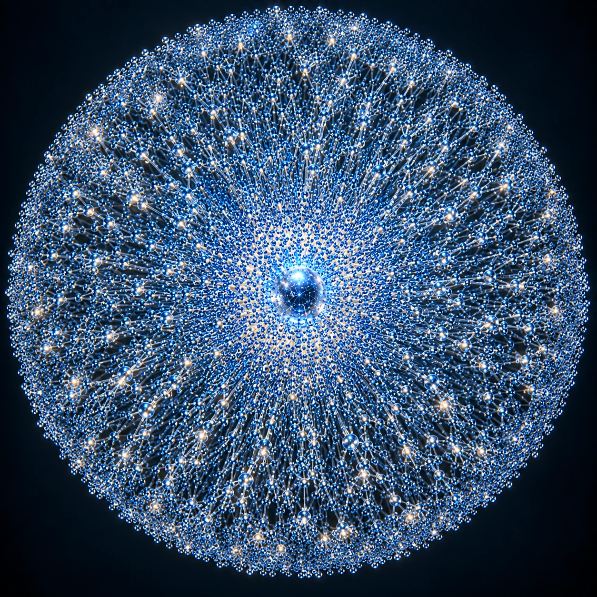

01. Central world
Z0 — Zero Plan, Z1 — First Plan, Z2 — Second Plan. The first block identifies the Central Plan from which branch numbering is counted.
STRUCTURE OF THE UNIVERSE
The Central Plans, branches, transitions and the structure of planetary worlds.
SPHERES OF PLANS
A Sphere of Plans is a set of Plans connected around one Central Plan through a system of branches and transitions. Numerous branches extend from the central world; they may split, and individual Plans lie along each branch.
Schematic model

CENTRAL PLANS
By the end of Book Two, three Central Plans are known: the Zero, First and Second Plans. The Central Plans have direct connections to one another. Each is the centre of its own branch system.
Connections between Central Plans
A BRANCH
A branch begins at a Central Plan. Plans are distributed along its length. A line may split at particular nodes, and each new branch begins at an existing Plan. Branches can themselves split again.
Example of a branch

CODING STANDARD
A unified planetary code is used to catalogue worlds and navigate between them.
Z0 — Zero Plan, Z1 — First Plan, Z2 — Second Plan. The first block identifies the Central Plan from which branch numbering is counted.
The second number is the portal-branch number from the central world. For example, Z0-15 means the fifteenth branch from Z0.
The third block is the sequential number of the Plan discovered on that branch. It indicates discovery order, not distance.
The following blocks encode the world class and additional classification details according to the setting's catalogue standard.